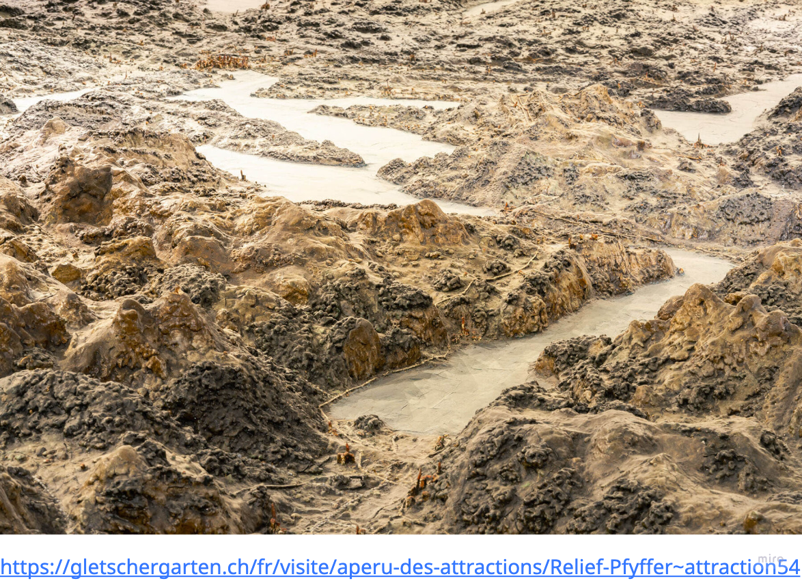
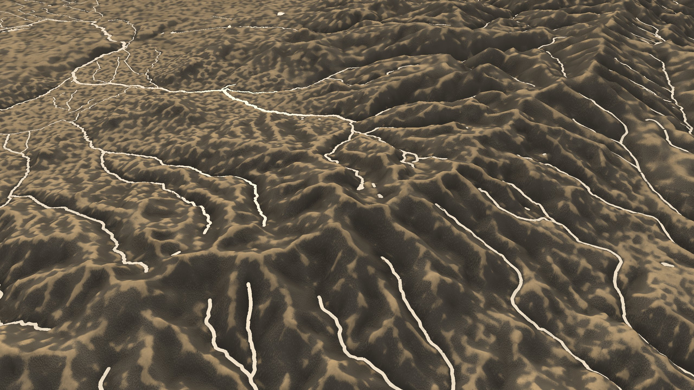
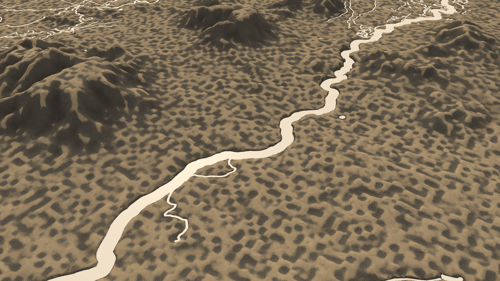
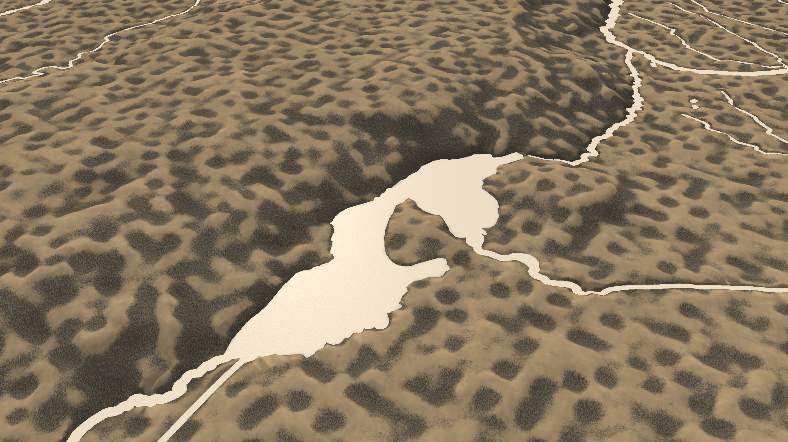
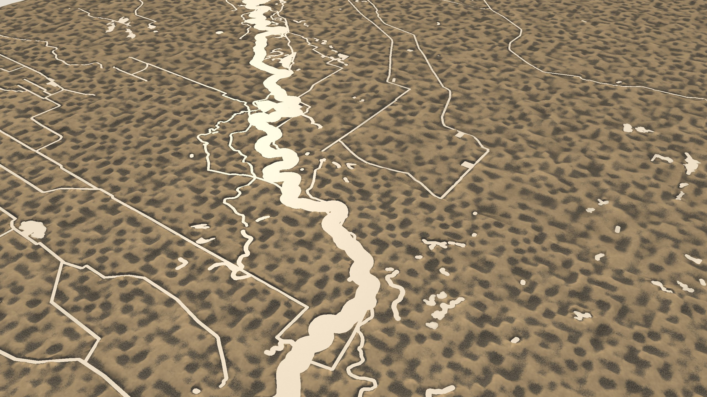
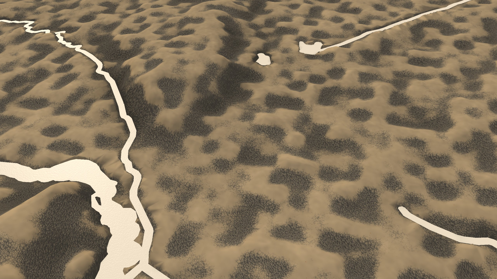

San Luis relief: fixed-camera review
The photograph is the style authority. Rendered views use the saved production
desktop capture at 2560 × 1440 canvas resolution with fixed sun and exposure.
Geography differs, so compare material, form, light, water and small details.
This sheet records open acceptance work; it is not a style sign-off.

Reference photograph

Culebra range · S1, S2, S3, S6

Rio Grande gorge · S1, S4

Sanchez Reservoir · S4

Valley fields · satellite tone

Close terrain · S2, S5
Style checklist
| Criterion | Current assessment |
|---|
| S1 · hand-pinched relief | Open: ridges and dark patches are too regular and smooth. |
| S2 · crust and granular split | Open: both tones appear, but the granular pattern repeats. |
| S3 · dust | Open: pale dust appears; strength and placement need reference review. |
| S4 · painted water | Open: planar and matte in stills; some reaches are narrow bright lines. Motion needs review. |
| S5 · flecks and strands | Open: marks are not clearly discernible at the fixed close crop. |
| S6 · daylight and camera | Open: oblique framing is present; photographic material/light match is incomplete. |
| S7 · muted palette | Open: six-colour reference and rendered swatch comparison remains to be measured. |
Water reference samples: palette.json.
Bake/asset and desktop performance evidence: validation.md.